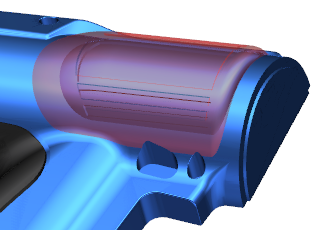
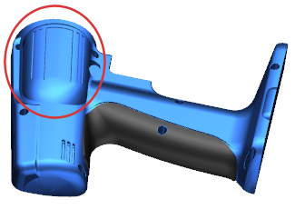

透明的红色面表示为适应更大的钻孔点击所需进行的设计更改，这个更改必须对模具基座进行，您将看到对电钻外壳的修改如何立即更新到模具基座中，这个部件间关系是从电钻外壳到模具基座，在模具基座中的 WAVE 链接的体是这个部件间关系中的子项，电钻外壳是父项。

将电钻外壳设为显示部件。
草图 (11) motor_bump_out_rev 是驱动电机间隙直径以及长度的基本特制。
编辑下列表达式：
Motor_Dia = 25
Motor_Lg = 90
现在电机间隙区域将变大。

在使用含有很多特制的部件间父项模型时，那么打开子部件可能需要大量时间，在父项中进行的每一项更改都将自动传递到子项中， 父项中的一个变化都可能导致子部件中漫长的部件更新，加快更改的的其中一种方法是在完成对父项的修改后再打开子部件。